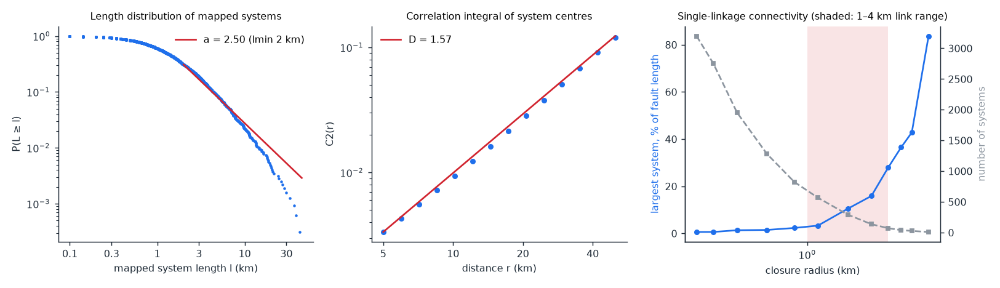
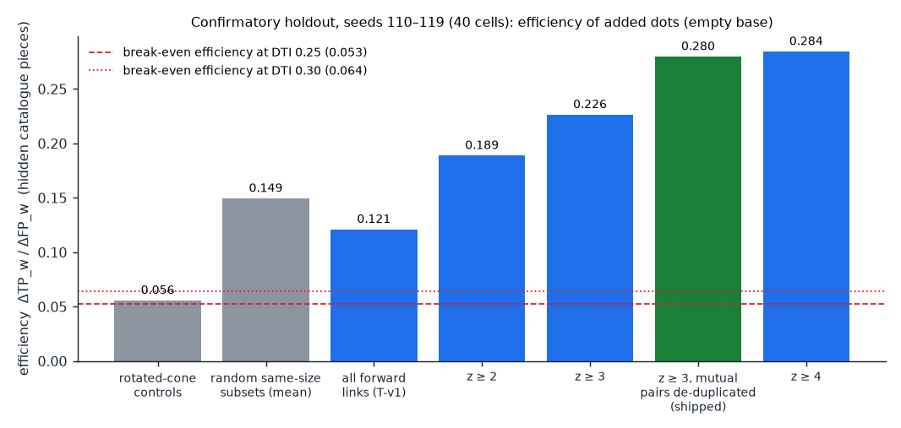
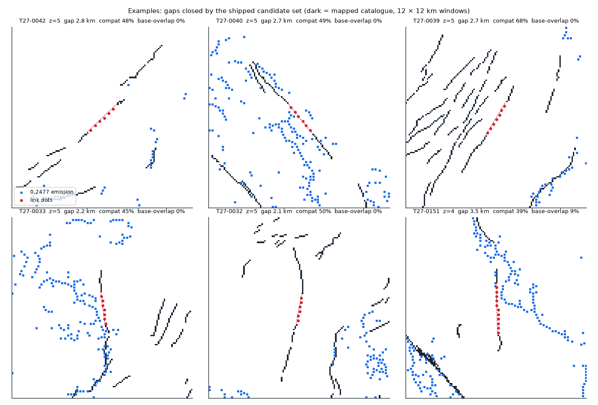
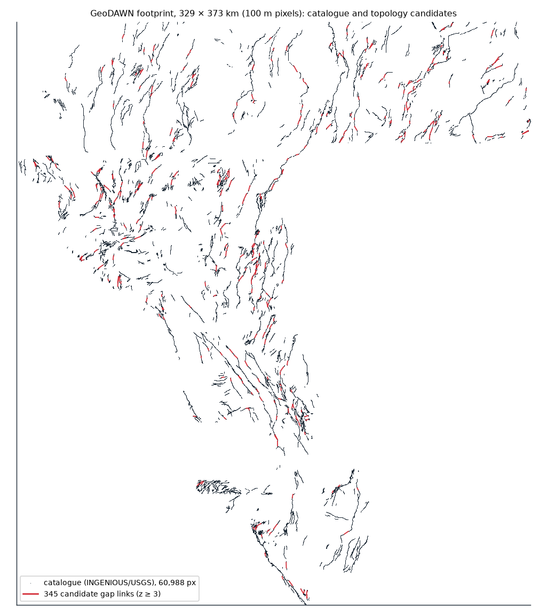

Topology candidates
A graph of the 59,209-pixel INGENIOUS/USGS catalogue: nodes at free tips and junctions, edges as mapped segments. Gaps of 1–4 km between tips of different systems become candidate links.
The argument
The mapped network is fragmented and near its connectivity threshold: exponent a ≈ 2.50±0.05 (lmin 2 km; 2.2–2.8 depending on lmin – not a clean power law), correlation dimension D ≈ 1.57, so a straddles D+1 = 2.57. Single-linkage closure takes the network from 3,199 systems to 293 at 2 km, 72 at 4 km and 10 at 8 km; the largest system holds 28% of fault length at 4 km and 84% at 8 km. Where a network sits near threshold, individual closures matter more than in a well-connected one – the motivation for a topology class. But the closures the holdout supports are fragment completions (systems 3,199 → 2,857; largest 42 → 58 km), not giant-system bridges: links joining large systems were less enriched.

What the literature does and does not give us (Berkowitz et al., GRL 2000)
| Statement | Verdict | Basis |
|---|---|---|
| The paper analyses the San Andreas fault system | verified | publisher abstract |
| Connectivity depends on scale for a < D+1, not for a > D+1 | verified | publisher abstract |
| San Andreas: a < D+1 and the threshold is reached only at a critical length scale | verified | abstract; text: a = 2.1, D = 1.65, β = 0.0085; "connectivity is expected for L > 21 km" (lmin ≈ 1 km), sensitivity 10 < Lc < 50 km |
| Numerical Lc | reproduced approx. | my closed form from the paper's eq. (1): 21.6 km (lmin→0), 26.7 km (lmin = 1 km) |
| A single segment decides whether two particular faults are joined | not stated by the paper | the paper: results "are statistical, and provide connectivity estimates on averages, rather than on particular realizations" – tested here instead of assumed |
Publisher page (abstract) · structural settings: Faulds & Hinz 2015 – step-overs/relay ramps ~32%, terminations 25%, intersections 22% of characterised Great Basin geothermal systems (a statement about geothermal settings, not about fault presence).
Validation (pre-registered, spatially blocked, component-masked)

| Run | Seeds | Result |
|---|---|---|
| T-v1 gate (component holdout) | 100–109 | efficiency 0.118 vs controls 0.057 (2.07×, narrow pass); forward > control in 4/4 folds; paired DTI gain +0.0184 (leaky base); PASSED |
| T-v2 gate (component holdout) | 110–119 | z ≥ 3: 0.226; de-duplicated 0.280; all links 0.121; random same-size 0.149 (p95 0.156); paired gain +0.0115; PASSED |
| Addendum B (3-tier vector holdout + H27-5) | 120–129 | Tier 1 (component): z≥3 dedup 0.2926 vs ctrl 0.0586 (5.00×). Tier 2 (whole NBMG FID vector polylines): z≥3 dedup 0.1003 vs ctrl 0.0204 (4.92×, > m(0.30)=0.0638); H27-5a (inter-FID + kinematic_compat) 0.1374 (6.74×); H27-5b (inter-FID + same_name + kinematic_compat) 0.1783 (8.74×). Tier 3 (whole 20–70 km named fault zones): 0.0014 vs ctrl 0.0012. PASSED |
| Addendum C (honest 4-fold spatial-CV OOF base) | 130–139 | On non-leaky Boof (mean DTI 0.0861), T-v2 gains +0.0115 in 4/4 folds (marginal eff 0.2251); H27-4 (100 m flank-shadow prune) gains +0.0022 solo and +0.0141 stacked with T-v2 in 4/4 folds; H27-3 isolated-dot removal refuted (-0.0010, 0/4 folds). PASSED (H27-1 & H27-4) |
Disclosed: my first confirmatory launch had an implementation bug (minimum gap applied before choosing the nearest target); a unit test caught it, it was stopped and rerun as registered – evidence/topology_validation_runA_partial_log.txt. Vector attribution uses the 1,179 NBMG INGENIOUS Qfaults polylines (qfaults_v2_in_footprint.json, matching 98.42% of labels.tif at 100 m and 99.97% at 200 m): 230/345 shipped links are intra-FID, 115/345 inter-FID, 312/345 same NAME, and 333/345 kinematically compatible.
Examples and map


All 345 candidates
Click a row for its written argument (including official NBMG/USGS fault zone name, FID, slip sense, and dip direction). Downloads: CSV · GeoJSON (WGS84). Review against the official USGS Interactive Fault Map (Quaternary faults only) and the map link in each row. z = evidence score 0–5; compat = share of nearby catalogued fault length within 20° of the link strike; base overlap = share of the link's dots already within 300 m of the 0.2477 emission.
| ID | z | kind | NBMG Fault Zone · FID · Slip/Dip | gap km | mutual | strike | compat | merged km | base overlap | mid lat, lon | |
|---|---|---|---|---|---|---|---|---|---|---|---|
| T27-0001 | 5 | end-to-end | Jersey Valley fault zone FID 486 · N/W | 1.00 | ✓ | 0° | 52% | 4.7 | 100% | 40.1679, -117.4721 | map |
| T27-0002 | 5 | end-to-end | Edna Mountain fault FID 338 · N/NE | 1.00 | ✓ | 174° | 50% | 5.4 | 33% | 40.6586, -117.5306 | map |
| T27-0003 | 5 | end-to-end | Unnamed faults in Pine valley FID 1321 · N/Unspecified | 1.00 | ✓ | 6° | 42% | 3.6 | 100% | 40.3353, -116.1800 | map |
| T27-0004 | 5 | end-to-end | Louderback Mountains fault FID 544 · RL/Unspecified | 1.00 | ✓ | 174° | 49% | 3.2 | 67% | 39.4479, -118.1430 | map |
| T27-0005 | 5 | end-to-end | Jersey Valley fault zone FID 486 · N/W | 1.02 | ✓ | 11° | 63% | 3.4 | 100% | 40.0784, -117.5512 | map |
| T27-0006 | 5 | end-to-end | Unnamed faults in Gabbs Valley FID 1302 · N/Unspecified | 1.04 | ✓ | 17° | 54% | 5.6 | 67% | 38.9671, -118.1041 | map |
| T27-0007 | 5 | end-to-end | Unnamed faults in Gabbs Valley Range FID 1307 · N/Unspecified | 1.08 | ✓ | 158° | 62% | 6.4 | 67% | 38.5341, -118.0487 | map |
| T27-0008 | 5 | end-to-end | Western Humboldt Range fault zone FID 1582 · N/W | 1.13 | ✓ | 45° | 40% | 3.1 | 100% | 40.6275, -118.1114 | map |
| T27-0009 | 5 | end-to-end | Unnamed faults in Gabbs Valley FID 1306→1303 · N/Unspecified | 1.20 | ✓ | 0° | 40% | 5.3 | 0% | 39.0062, -118.0625 | map |
| T27-0010 | 5 | end-to-end | Southeast Fish Creek Mountains fault FID 906 · N/SE | 1.20 | ✓ | 5° | 49% | 3.3 | 0% | 40.1525, -117.1967 | map |
| T27-0011 | 5 | end-to-end | Shoshone Range fault zone FID 862 · N/NW | 1.21 | ✓ | 24° | 63% | 2.4 | 0% | 40.3495, -117.0277 | map |
| T27-0012 | 5 | end-to-end | Dry Moumtain fault FID 205 · N/Unspecified | 1.22 | ✓ | 9° | 51% | 4.8 | 0% | 40.5450, -119.0654 | map |
| T27-0013 | 5 | end-to-end | Shoshone Range fault zone FID 862→863 · N/NW | 1.22 | ✓ | 9° | 49% | 2.7 | 67% | 40.2589, -117.0811 | map |
| T27-0014 | 5 | end-to-end | SW Warm Springs Valley fault FID 796 · N/Unspecified | 1.39 | ✓ | 150° | 44% | 4.7 | 0% | 39.7330, -119.5795 | map |
| T27-0015 | 5 | end-to-end | Seven Troughs Range fault zone FID 856 · N/E | 1.39 | ✓ | 21° | 68% | 3.5 | 0% | 40.5467, -118.7153 | map |
| T27-0016 | 5 | end-to-end | Western Fairview Peak fault FID 1576→1577 · N/Unspecified | 1.40 | ✓ | 0° | 55% | 4.2 | 0% | 39.3809, -118.1750 | map |
| T27-0017 | 5 | end-to-end | Dixie Valley fault zone, "1954" section FID 189 · N/Unspecified | 1.49 | ✓ | 20° | 68% | 4.8 | 50% | 39.4860, -118.1995 | map |
| T27-0018 | 5 | end-to-end | Fairview fault zone → Western Fairview Peak fault FID 2669→1576 · N/Unspecified | 1.51 | ✓ | 8° | 50% | 3.9 | 0% | 39.0683, -118.2080 | map |
| T27-0019 | 5 | end-to-end | Wassuk Range fault zone FID 1555→1561 · N/Unspecified | 1.53 | ✓ | 148° | 58% | 4.8 | 25% | 39.0203, -118.9048 | map |
| T27-0020 | 5 | end-to-end | Western Humboldt Range fault zone FID 1582 · N/W | 1.60 | ✓ | 176° | 43% | 7.0 | 80% | 40.2465, -118.3574 | map |
| T27-0021 | 5 | end-to-end | Nightingale Mountains fault zone FID 630 · N/W | 1.60 | ✓ | 4° | 54% | 4.2 | 80% | 40.2238, -119.2854 | map |
| T27-0022 | 5 | end-to-end | Unnamed faults southwestern Stillwater Range FID 1505 · N/Unspecified | 1.61 | ✓ | 30° | 47% | 5.7 | 50% | 39.4295, -118.4221 | map |
| T27-0023 | 5 | end-to-end | Seven Troughs Range fault zone FID 856 · N/E | 1.66 | ✓ | 25° | 64% | 5.0 | 75% | 40.4469, -118.7611 | map |
| T27-0024 | 5 | end-to-end | Carico Lake Valley fault zone FID 98 · N/Unspecified | 1.66 | ✓ | 33° | 56% | 4.3 | 0% | 40.1832, -116.8314 | map |
| T27-0025 | 5 | end-to-end | Sagouse fault zone FID 804→806 · N/Unspecified | 1.70 | ✓ | 3° | 40% | 5.7 | 0% | 39.6166, -118.8005 | map |
| T27-0026 | 5 | end-to-end | Edna Mountain fault FID 338 · N/NE | 1.79 | ✓ | 27° | 53% | 4.0 | 60% | 40.6974, -117.5291 | map |
| T27-0027 | 5 | end-to-end | Gumdrop Hills fault zone FID 409 · RL/SW | 1.80 | ✓ | 146° | 57% | 4.8 | 0% | 38.6716, -118.3082 | map |
| T27-0028 | 5 | end-to-end | Selenite Range fault zone FID 855 · N/W | 1.97 | ✓ | 15° | 65% | 5.9 | 67% | 40.4690, -119.2996 | map |
| T27-0029 | 5 | end-to-end | Northern Fish Creek Mountains faults FID 660→659 · N/E | 1.97 | ✓ | 24° | 61% | 7.9 | 100% | 40.4164, -117.2463 | map |
| T27-0030 | 5 | end-to-end | Unnamed fault zone on east side of Selenite Range FID 1229 · N/E | 2.06 | ✓ | 23° | 63% | 3.9 | 83% | 40.6226, -119.2262 | map |
| T27-0031 | 5 | end-to-end | Eastern Carson Sink fault zone FID 263 · N/W | 2.09 | ✓ | 17° | 65% | 3.3 | 67% | 39.6832, -118.3002 | map |
| T27-0032 | 5 | end-to-end | Shoshone Range fault zone FID 862 · N/NW | 2.14 | ✓ | 11° | 50% | 5.8 | 0% | 40.3260, -117.1001 | map |
| T27-0033 | 5 | end-to-end | Buffalo Valley fault zone FID 82 · N/E | 2.22 | ✓ | 172° | 45% | 4.3 | 0% | 40.6187, -117.3789 | map |
| T27-0034 | 5 | end-to-end | Buena Vista Valley fault zone FID 76 · N/W | 2.34 | ✓ | 20° | 64% | 4.5 | 100% | 40.1700, -117.8785 | map |
| T27-0035 | 5 | end-to-end | Benton Spring fault FID 29 · RL/Unspecified | 2.44 | ✓ | 145° | 58% | 5.9 | 100% | 38.3261, -118.0331 | map |
| T27-0036 | 5 | end-to-end | Benton Spring fault FID 31 · RL/Unspecified | 2.48 | ✓ | 133° | 47% | 5.5 | 0% | 38.7911, -118.3380 | map |
| T27-0037 | 5 | end-to-end | Unnamed fault zone southeastern Truckee Range FID 1243 · N/SE | 2.50 | ✓ | 16° | 54% | 6.6 | 43% | 39.7655, -119.0810 | map |
| T27-0038 | 5 | end-to-end | Unnamed fault zone near Little Valley FID 1209 · N/Unspecified | 2.55 | ✓ | 11° | 45% | 5.2 | 50% | 39.7148, -119.2160 | map |
| T27-0039 | 5 | end-to-end | Kumiva Valley fault zone FID 519 · N/SE | 2.69 | ✓ | 31° | 68% | 7.0 | 0% | 40.4227, -119.0805 | map |
| T27-0040 | 5 | end-to-end | Benton Spring fault FID 31→33 · RL/Unspecified | 2.70 | ✓ | 141° | 49% | 5.4 | 0% | 38.8223, -118.3725 | map |
| T27-0041 | 5 | end-to-end | Pleasant Valley fault zone, Sou Hills section → Dixie Valley fault zone, Stillwater seismic gap section FID 730→2668 · N/NW | 2.71 | ✓ | 4° | 52% | 4.9 | 25% | 40.1029, -117.7544 | map |
| T27-0042 | 5 | end-to-end | Dry Hills faults FID 199→200 · N/NW | 2.76 | ✓ | 46° | 48% | 4.2 | 0% | 40.5029, -116.3993 | map |
| T27-0043 | 5 | end-to-end | Unnamed faults southwestern Stillwater Range FID 1506→1505 · N/Unspecified | 2.92 | ✓ | 6° | 56% | 6.6 | 22% | 39.3849, -118.4207 | map |
| T27-0044 | 5 | end-to-end | Eastern Carson Sink fault zone FID 263 · N/W | 3.76 | ✓ | 25° | 52% | 5.6 | 100% | 39.7140, -118.2845 | map |
| T27-0045 | 5 | end-to-end | Unnamed fault zone southeastern Truckee Range FID 1241 · N/SE | 3.90 | ✓ | 40° | 46% | 5.7 | 44% | 39.8512, -118.9691 | map |
| T27-0046 | 4 | end-to-end | Dry Hills faults FID 199 · N/NW | 1.00 | 37° | 54% | 2.7 | 0% | 40.4587, -116.4704 | map | |
| T27-0047 | 4 | end-to-end | Northern Simpson Park Mountains fault zone FID 671→670 · N/N | 1.00 | ✓ | 90° | 22% | 3.7 | 33% | 40.0617, -116.3668 | map |
| T27-0048 | 4 | end-to-end | Buffalo Valley fault zone FID 82 · N/E | 1.00 | ✓ | 6° | 57% | 7.2 | 67% | 40.5646, -117.3904 | map |
| T27-0049 | 4 | end-to-end | Dixie Valley fault zone, "1954" section FID 191 · N/Unspecified | 1.00 | 6° | 61% | 2.1 | 0% | 39.4011, -118.2212 | map | |
| T27-0050 | 4 | end-to-end | Unnamed fault zone west of Luning FID 1252 · N/N | 1.00 | ✓ | 84° | 15% | 6.3 | 100% | 38.4938, -118.2499 | map |
| T27-0051 | 4 | end-to-end | Monte Cristo Valley fault zone FID 599→604 · RL/Unspecified | 1.00 | ✓ | 174° | 50% | 2.3 | 0% | 38.4817, -117.8501 | map |
| T27-0052 | 4 | end-to-end | Wassuk Range fault zone FID 1560→1552 · N/Unspecified | 1.02 | ✓ | 169° | 49% | 14.2 | 67% | 39.0589, -118.8850 | map |
| T27-0053 | 4 | end-to-end | Eastern Humboldt Range fault zone FID 281 · N/E | 1.04 | ✓ | 17° | 55% | 4.4 | 67% | 40.5647, -118.0874 | map |
| T27-0054 | 4 | end-to-end | Pleasant Valley fault zone, Sou Hills section FID 730 · N/NW | 1.04 | 17° | 70% | 5.6 | 0% | 40.1892, -117.7172 | map | |
| T27-0055 | 4 | end-to-end | Shoshone Range fault zone FID 862 · N/NW | 1.06 | 41° | 53% | 2.8 | 0% | 40.5876, -116.8174 | map | |
| T27-0056 | 4 | end-to-end | Southeast Fish Creek Mountains fault FID 906 · N/SE | 1.10 | 0° | 47% | 4.9 | 100% | 40.1790, -117.2408 | map | |
| T27-0057 | 4 | end-to-end | Unnamed fault zone in southeastern Gabbs Valley Range FID 1198→1196 · N/Unspecified | 1.10 | ✓ | 0° | 32% | 2.6 | 100% | 38.6980, -118.0074 | map |
| T27-0058 | 4 | end-to-end | Unnamed faults northern Monte Cristo Mountains FID 1445 · N/Unspecified | 1.13 | ✓ | 135° | 8% | 7.6 | 0% | 39.1544, -118.1134 | map |
| T27-0059 | 4 | end-to-end | Western Fairview Peak fault FID 1576 · N/Unspecified | 1.17 | 20° | 64% | 3.8 | 0% | 39.3370, -118.1882 | map | |
| T27-0060 | 4 | end-to-end | Unnamed fault zone in Pine Mountains FID 1187 · N/Unspecified | 1.17 | ✓ | 160° | 23% | 4.4 | 0% | 39.2169, -119.2900 | map |
| T27-0061 | 4 | end-to-end | Pyramid Lake fault zone FID 749→750 · RL/Unspecified | 1.20 | ✓ | 138° | 31% | 3.0 | 100% | 39.8312, -119.4306 | map |
| T27-0062 | 4 | end-to-end | Lone Mountain fault zone FID 537 · N/Unspecified | 1.20 | ✓ | 48° | 38% | 5.7 | 0% | 38.0517, -117.5705 | map |
| T27-0063 | 4 | end-to-end | Unnamed faults southwestern Stillwater Range FID 1506 · N/Unspecified | 1.21 | ✓ | 24° | 60% | 4.6 | 33% | 39.4147, -118.4131 | map |
| T27-0064 | 4 | end-to-end | Unnamed faults west of Cocoon Mountains FID 1514 · N/Unspecified | 1.21 | ✓ | 66° | 4% | 2.6 | 33% | 39.1406, -118.4990 | map |
| T27-0065 | 4 | end-to-end | Sand Springs Range fault FID 811→812 · N/Unspecified | 1.22 | ✓ | 9° | 62% | 5.1 | 0% | 39.2951, -118.2733 | map |
| T27-0066 | 4 | end-to-end | Dixie Valley fault zone, Stillwater seismic gap section FID 2668 · N/Unspecified | 1.22 | ✓ | 35° | 46% | 6.2 | 0% | 39.8663, -118.0085 | map |
| T27-0067 | 4 | end-to-end | Pleasant Valley fault zone, Tobin section FID 731 · N/W | 1.30 | ✓ | 0° | 60% | 9.7 | 75% | 40.5473, -117.5586 | map |
| T27-0068 | 4 | end-to-end | Carson lineament FID 106 · LL/Unspecified | 1.30 | ✓ | 67° | 33% | 2.5 | 0% | 39.3273, -119.4862 | map |
| T27-0069 | 4 | end-to-end | Gumdrop Hills fault zone FID 411→409 · RL/SW | 1.30 | ✓ | 157° | 53% | 10.1 | 100% | 38.6435, -118.2852 | map |
| T27-0070 | 4 | end-to-end | Rainbow Mountain fault zone FID 774 · RL/Unspecified | 1.39 | ✓ | 30° | 38% | 4.7 | 0% | 39.8602, -118.4889 | map |
| T27-0071 | 4 | end-to-end | Unnamed fault zone along Bluewing Mountains FID 2640 · N/NW | 1.39 | ✓ | 21° | 62% | 13.1 | 75% | 40.3324, -119.0889 | map |
| T27-0072 | 4 | end-to-end | Unnamed faults in southern Gillis Range FID 1365 · N/N | 1.43 | ✓ | 78° | 23% | 4.9 | 75% | 38.6702, -118.4300 | map |
| T27-0073 | 4 | end-to-end | Fish Lake Valley fault zone, Leidy Creek section FID 1679→1939 · RL/Unspecified | 1.49 | ✓ | 42° | 30% | 5.8 | 0% | 37.7756, -118.0674 | map |
| T27-0074 | 4 | end-to-end | Unnamed faults near Terrill Mountains FID 1423→1422 · RL/Unspecified | 1.50 | ✓ | 143° | 52% | 7.1 | 33% | 39.0755, -118.6826 | map |
| T27-0075 | 4 | end-to-end | Shoshone Range fault zone FID 863→862 · N/NW | 1.50 | ✓ | 4° | 45% | 9.1 | 75% | 40.2260, -117.0946 | map |
| T27-0076 | 4 | end-to-end | Shoshone Range fault zone FID 862 · N/NW | 1.50 | ✓ | 176° | 25% | 4.1 | 100% | 40.1495, -117.0569 | map |
| T27-0077 | 4 | end-to-end | Southeastern Sheep Creek Range fault FID 907 · N/E | 1.52 | ✓ | 23° | 51% | 9.0 | 75% | 40.7127, -116.7384 | map |
| T27-0078 | 4 | end-to-end | Northern Fish Creek Mountains faults FID 659 · N/E | 1.56 | ✓ | 50° | 25% | 4.0 | 100% | 40.3947, -117.2698 | map |
| T27-0079 | 4 | end-to-end | Middlegate fault zone → Unnamed faults northern Monte Cristo Mountains FID 580→1445 · N/W | 1.56 | ✓ | 27° | 69% | 6.0 | 100% | 39.2284, -117.9981 | map |
| T27-0080 | 4 | end-to-end | Unnamed fault zone near Little Valley FID 1209 · N/Unspecified | 1.58 | ✓ | 18° | 48% | 5.1 | 25% | 39.7744, -119.2074 | map |
| T27-0081 | 4 | end-to-end | Rainbow Mountain fault zone FID 774 · RL/Unspecified | 1.62 | 22° | 48% | 4.2 | 0% | 39.8181, -118.4325 | map | |
| T27-0082 | 4 | end-to-end | Fish Lake Valley fault zone, Oasis section FID 1937 · RL/Unspecified | 1.62 | ✓ | 158° | 68% | 5.4 | 100% | 37.5195, -117.9755 | map |
| T27-0083 | 4 | end-to-end | Jersey Valley fault zone FID 486 · N/W | 1.63 | ✓ | 43° | 34% | 8.0 | 100% | 40.0955, -117.5402 | map |
| T27-0084 | 4 | end-to-end | Dixie Valley fault zone, Stillwater seismic gap section FID 2667 · N/SE | 1.64 | ✓ | 38° | 64% | 10.1 | 100% | 40.0050, -117.8400 | map |
| T27-0085 | 4 | end-to-end | Buffalo Valley fault zone → Jersey Valley fault zone FID 82→486 · N/E | 1.65 | ✓ | 166° | 28% | 5.9 | 80% | 40.2870, -117.4412 | map |
| T27-0086 | 4 | end-to-end | Dry Hills faults FID 199→200 · N/NW | 1.70 | 45° | 46% | 4.6 | 0% | 40.4837, -116.4254 | map | |
| T27-0087 | 4 | end-to-end | Carico Lake Valley fault zone FID 98 · N/Unspecified | 1.70 | 45° | 48% | 6.1 | 67% | 40.1004, -116.9402 | map | |
| T27-0088 | 4 | end-to-end | Granite Springs Valley fault zone FID 399 · N/E | 1.70 | 28° | 64% | 3.7 | 50% | 40.2907, -119.0024 | map | |
| T27-0089 | 4 | end-to-end | Rainbow Mountain fault zone FID 774 · RL/Unspecified | 1.70 | ✓ | 0° | 38% | 5.0 | 0% | 39.7913, -118.4868 | map |
| T27-0090 | 4 | end-to-end | Dixie Valley fault zone, "1954" section FID 191 · N/Unspecified | 1.71 | ✓ | 21° | 65% | 2.9 | 0% | 39.3786, -118.2191 | map |
| T27-0091 | 4 | end-to-end | Gumdrop Hills fault zone FID 410→409 · RL/SW | 1.72 | ✓ | 144° | 53% | 9.9 | 0% | 38.8056, -118.4453 | map |
| T27-0092 | 4 | end-to-end | Jersey Valley fault zone FID 486 · N/W | 1.75 | 24° | 67% | 5.2 | 40% | 40.0422, -117.5761 | map | |
| T27-0093 | 4 | end-to-end | Sagouse fault zone FID 804 · N/Unspecified | 1.77 | ✓ | 164° | 23% | 3.1 | 20% | 39.6390, -118.8034 | map |
| T27-0094 | 4 | end-to-end | Pyramid Lake fault zone FID 749 · RL/Unspecified | 1.80 | ✓ | 0° | 31% | 5.9 | 0% | 39.6180, -119.2612 | map |
| T27-0095 | 4 | end-to-end | Pyramid Lake fault zone FID 750 · RL/Unspecified | 1.80 | ✓ | 146° | 16% | 4.6 | 0% | 39.5290, -119.1769 | map |
| T27-0096 | 4 | end-to-end | Unnamed fault zone on northwest side of Trinity Range FID 1231 · N/Unspecified | 1.82 | 9° | 51% | 4.1 | 100% | 40.0356, -118.8232 | map | |
| T27-0097 | 4 | end-to-end | Southeast Fish Creek Mountains fault FID 906 · N/SE | 1.88 | 25° | 61% | 5.6 | 0% | 40.1502, -117.2008 | map | |
| T27-0098 | 4 | end-to-end | Unnamed faults near Teels Marsh FID 1677 · LL/Unspecified | 1.91 | 43° | 51% | 5.7 | 0% | 38.0614, -118.5782 | map | |
| T27-0099 | 4 | end-to-end | Fairview fault zone → Unnamed faults northern Monte Cristo Mountains FID 2669→1445 · N/Unspecified | 1.92 | 9° | 61% | 4.5 | 0% | 39.0891, -118.1048 | map | |
| T27-0100 | 4 | end-to-end | Hot Springs Mountain fault zone → Carson lineament FID 444→108 · N/SE | 1.97 | ✓ | 15° | 33% | 7.9 | 17% | 39.5231, -119.0598 | map |
| T27-0101 | 4 | end-to-end | Bettles Well-Petrified Springs fault → Monte Cristo Valley fault zone FID 43→604 · RL/Unspecified | 1.97 | 156° | 68% | 3.8 | 80% | 38.4050, -117.8636 | map | |
| T27-0102 | 4 | end-to-end | Western Fairview Peak fault FID 1576 · N/Unspecified | 2.00 | ✓ | 3° | 56% | 4.6 | 0% | 39.3122, -118.1953 | map |
| T27-0103 | 4 | end-to-end | Western Fairview Peak fault FID 1576 · N/Unspecified | 2.01 | 174° | 43% | 5.0 | 0% | 39.3122, -118.1936 | map | |
| T27-0104 | 4 | end-to-end | Unnamed fault zone near Little Valley FID 1209 · N/Unspecified | 2.01 | ✓ | 27° | 40% | 5.7 | 0% | 39.7213, -119.2267 | map |
| T27-0105 | 4 | end-to-end | Warm Springs Valley fault zone FID 1540→1539 · RL/Unspecified | 2.02 | ✓ | 160° | 46% | 6.9 | 0% | 39.8666, -119.7037 | map |
| T27-0106 | 4 | end-to-end | Bettles Well-Petrified Springs fault FID 43 · RL/Unspecified | 2.02 | 147° | 64% | 3.9 | 100% | 38.4323, -117.8805 | map | |
| T27-0107 | 4 | end-to-end | Shoshone Range fault zone FID 862 · N/NW | 2.06 | 29° | 53% | 6.3 | 0% | 40.3797, -117.0624 | map | |
| T27-0108 | 4 | end-to-end | Shoshone Range fault zone FID 863 · N/NW | 2.06 | 39° | 58% | 4.0 | 100% | 40.0427, -117.1120 | map | |
| T27-0109 | 4 | end-to-end | Warm Springs Valley fault zone FID 1540 · RL/Unspecified | 2.06 | 141° | 51% | 4.0 | 20% | 39.9071, -119.7614 | map | |
| T27-0110 | 4 | end-to-end | Crescent Valley faults FID 179 · N/NW | 2.08 | 35° | 54% | 4.0 | 0% | 40.3834, -116.4663 | map | |
| T27-0111 | 4 | end-to-end | Unnamed faults west of Desert Mountains FID 1515 · N/Unspecified | 2.10 | ✓ | 3° | 24% | 4.6 | 0% | 39.1922, -119.2192 | map |
| T27-0112 | 4 | end-to-end | Unnamed faults in Gabbs Valley Range FID 1307 · N/Unspecified | 2.10 | ✓ | 155° | 57% | 12.0 | 17% | 38.6560, -118.1660 | map |
| T27-0113 | 4 | end-to-end | Buena Vista Valley fault zone FID 76 · N/W | 2.12 | ✓ | 19° | 66% | 8.5 | 100% | 40.1447, -117.8916 | map |
| T27-0114 | 4 | end-to-end | Rainbow Mountain fault zone FID 774 · RL/Unspecified | 2.12 | 8° | 46% | 4.3 | 0% | 39.8480, -118.4185 | map | |
| T27-0115 | 4 | end-to-end | Unnamed faults west of Cocoon Mountains FID 1514 · N/Unspecified | 2.12 | ✓ | 172° | 37% | 4.3 | 50% | 39.2054, -118.5711 | map |
| T27-0116 | 4 | end-to-end | Shoshone Range fault zone FID 863 · N/NW | 2.14 | ✓ | 37° | 48% | 6.1 | 0% | 40.2279, -117.0664 | map |
| T27-0117 | 4 | end-to-end | Carson lineament FID 106→104 · LL/Unspecified | 2.14 | ✓ | 53° | 38% | 5.2 | 0% | 39.3844, -119.3878 | map |
| T27-0118 | 4 | end-to-end | Unnamed fault zone southeastern Truckee Range FID 1243→1244 · N/SE | 2.16 | 34° | 45% | 7.2 | 0% | 39.7318, -119.0993 | map | |
| T27-0119 | 4 | end-to-end | Dixie Valley fault zone, "1954" section FID 189→191 · N/Unspecified | 2.22 | ✓ | 36° | 42% | 5.1 | 100% | 39.4353, -118.2207 | map |
| T27-0120 | 4 | end-to-end | Rainbow Mountain fault zone FID 774 · RL/Unspecified | 2.26 | 13° | 47% | 7.0 | 0% | 39.7890, -118.4897 | map | |
| T27-0121 | 4 | end-to-end | Sand Springs Range fault FID 2666→2665 · N/Unspecified | 2.28 | ✓ | 52° | 20% | 6.9 | 0% | 39.3723, -118.3037 | map |
| T27-0122 | 4 | end-to-end | Unnamed fault zone near Little Valley FID 1209→1208 · N/Unspecified | 2.33 | ✓ | 170° | 34% | 5.0 | 86% | 39.8136, -119.2758 | map |
| T27-0123 | 4 | end-to-end | Shoshone Range fault zone FID 862→863 · N/NW | 2.36 | ✓ | 54° | 35% | 7.9 | 33% | 40.3220, -117.0547 | map |
| T27-0124 | 4 | end-to-end | Unnamed fault near Churchill Butte FID 1075 · N/Unspecified | 2.42 | ✓ | 7° | 22% | 6.2 | 71% | 39.3469, -119.2577 | map |
| T27-0125 | 4 | end-to-end | Shoshone Range fault zone FID 862 · N/NW | 2.44 | 55° | 40% | 5.2 | 0% | 40.3887, -116.9882 | map | |
| T27-0126 | 4 | end-to-end | Hot Springs fault zone FID 441→440 · N/Unspecified | 2.46 | ✓ | 27° | 46% | 10.4 | 0% | 38.9112, -118.1932 | map |
| T27-0127 | 4 | end-to-end | Unnamed fault zone southeastern Truckee Range FID 1243 · N/SE | 2.51 | 29° | 50% | 5.9 | 57% | 39.7629, -119.0745 | map | |
| T27-0128 | 4 | end-to-end | Unnamed faults in Gabbs Valley FID 1306→1302 · N/Unspecified | 2.51 | 29° | 55% | 6.6 | 14% | 38.9673, -118.0827 | map | |
| T27-0129 | 4 | end-to-end | Shoshone Range fault zone FID 862→863 · N/NW | 2.52 | 7° | 43% | 3.5 | 100% | 40.0801, -117.0921 | map | |
| T27-0130 | 4 | end-to-end | Pyramid Lake fault zone → Olinghouse fault zone FID 749→683 · RL/Unspecified | 2.62 | ✓ | 18° | 36% | 6.1 | 0% | 39.7040, -119.3515 | map |
| T27-0131 | 4 | end-to-end | Carico Lake Valley fault zone FID 98 · N/Unspecified | 2.69 | 42° | 53% | 6.5 | 0% | 40.1454, -116.8896 | map | |
| T27-0132 | 4 | end-to-end | Buffalo Valley fault zone FID 82 · N/E | 2.70 | ✓ | 39° | 39% | 7.4 | 0% | 40.5877, -117.3480 | map |
| T27-0133 | 4 | end-to-end | Unnamed fault zone southeastern Truckee Range FID 1243 · N/SE | 2.78 | 38° | 44% | 6.2 | 57% | 39.7630, -119.0716 | map | |
| T27-0134 | 4 | end-to-end | Carico Lake Valley fault zone → Central Carico Lake Valley fault group FID 98→119 · N/Unspecified | 2.82 | ✓ | 6° | 31% | 4.8 | 89% | 40.0661, -116.9068 | map |
| T27-0135 | 4 | end-to-end | San Emidio fault zone FID 808 · N/W | 2.85 | 18° | 56% | 4.8 | 0% | 40.4296, -119.3772 | map | |
| T27-0136 | 4 | end-to-end | Unnamed fault zone near Little Valley → Pyramid Lake fault zone FID 1209→749 · N/Unspecified | 2.88 | ✓ | 34° | 35% | 6.3 | 57% | 39.6803, -119.2516 | map |
| T27-0137 | 4 | end-to-end | Unnamed fault zone on northwest side of Trinity Range FID 1233→1232 · N/Unspecified | 2.90 | ✓ | 44° | 40% | 5.9 | 67% | 39.9313, -118.9485 | map |
| T27-0138 | 4 | end-to-end | Unnamed faults west of Desert Mountains FID 1515 · N/Unspecified | 2.96 | ✓ | 12° | 24% | 5.6 | 78% | 39.2211, -119.2160 | map |
| T27-0139 | 4 | end-to-end | Benton Spring fault FID 29 · RL/Unspecified | 3.00 | ✓ | 0° | 36% | 6.6 | 78% | 38.2928, -118.0223 | map |
| T27-0140 | 4 | end-to-end | unnamed fault → Fish Lake Valley fault zone, Oasis section FID 2200→1940 · Unspecified/Unspecified | 3.00 | 150° | 51% | 4.1 | 0% | 37.4435, -117.8337 | map | |
| T27-0141 | 4 | end-to-end | Buffalo Valley fault zone FID 82 · N/E | 3.04 | 27° | 62% | 7.3 | 0% | 40.5904, -117.3498 | map | |
| T27-0142 | 4 | end-to-end | Unnamed faults in Gabbs Valley FID 1305 · N/Unspecified | 3.05 | 23° | 50% | 7.1 | 0% | 38.9199, -118.1316 | map | |
| T27-0143 | 4 | end-to-end | Unnamed fault zone on northwest side of Trinity Range FID 1231 · N/Unspecified | 3.07 | ✓ | 19° | 43% | 5.9 | 0% | 40.0807, -118.8473 | map |
| T27-0144 | 4 | end-to-end | Unnamed fault zone on northwest side of Trinity Range FID 1233→1232 · N/Unspecified | 3.08 | 36° | 49% | 5.7 | 75% | 39.9331, -118.9498 | map | |
| T27-0145 | 4 | end-to-end | Western Fairview Peak fault FID 1576 · N/Unspecified | 3.23 | 30° | 56% | 5.4 | 11% | 39.2770, -118.2023 | map | |
| T27-0146 | 4 | end-to-end | Granite Springs Valley fault zone FID 401→400 · N/E | 3.31 | 5° | 51% | 5.1 | 50% | 39.9988, -119.0565 | map | |
| T27-0147 | 4 | end-to-end | Beowawe fault FID 35→34 · N/NW | 3.32 | 16° | 46% | 7.2 | 30% | 40.6630, -116.4304 | map | |
| T27-0148 | 4 | end-to-end | Fish Lake Valley fault zone, Oasis section FID 1937 · RL/Unspecified | 3.44 | ✓ | 144° | 50% | 7.6 | 0% | 37.4871, -117.9151 | map |
| T27-0149 | 4 | end-to-end | Dixie Valley fault zone, "1954" section FID 190→189 · N/Unspecified | 3.49 | ✓ | 24° | 49% | 9.3 | 0% | 39.7728, -118.0801 | map |
| T27-0150 | 4 | end-to-end | Hot Springs Mountain fault zone FID 442 · N/SE | 3.50 | ✓ | 37° | 47% | 8.4 | 0% | 39.8358, -118.8074 | map |
| T27-0151 | 4 | end-to-end | McAfee Canyon fault → Fish Lake Valley fault zone, Cucomongo section FID 558→365 · N/W | 3.50 | ✓ | 178° | 39% | 5.6 | 9% | 37.5918, -117.9498 | map |
| T27-0152 | 4 | end-to-end | Carico Lake Valley fault zone FID 98 · N/Unspecified | 3.55 | 22° | 52% | 7.5 | 40% | 40.1008, -116.8938 | map | |
| T27-0153 | 4 | end-to-end | Jersey Valley fault zone FID 486 · N/W | 3.66 | ✓ | 35° | 57% | 6.2 | 56% | 40.0485, -117.5680 | map |
| T27-0154 | 4 | end-to-end | Pinon Range fault zone, southern section FID 726 · N/W | 3.89 | 64° | 42% | 4.8 | 64% | 40.0872, -116.1877 | map | |
| T27-0155 | 3 | abutting | Seven Troughs Range fault zone FID 856 · N/E | 1.00 | 37° | 65% | 4.2 | 50% | 40.5271, -118.7296 | map | |
| T27-0156 | 3 | end-to-end | Dixie Valley fault zone, Stillwater seismic gap section FID 2667 · N/SE | 1.00 | ✓ | 37° | 50% | 8.0 | 100% | 39.9323, -117.9714 | map |
| T27-0157 | 3 | abutting | Dixie Valley fault zone, "1954" section FID 189→190 · N/Unspecified | 1.00 | 0° | 59% | 5.8 | 0% | 39.7089, -118.1642 | map | |
| T27-0158 | 3 | end-to-end | Wassuk Range fault zone FID 1561→1555 · N/Unspecified | 1.00 | 0° | 31% | 6.2 | 0% | 39.1354, -118.8905 | map | |
| T27-0159 | 3 | end-to-end | Shoshone Range fault zone FID 862 · N/NW | 1.00 | 6° | 38% | 6.9 | 0% | 40.5489, -116.8022 | map | |
| T27-0160 | 3 | end-to-end | Unnamed faults east of Mount Lewis, Shoshone Range FID 1268 · N/W | 1.00 | ✓ | 6° | 34% | 9.8 | 0% | 40.3776, -116.7591 | map |
| T27-0161 | 3 | end-to-end | Buena Vista Valley fault zone FID 76 · N/W | 1.00 | ✓ | 174° | 33% | 3.7 | 100% | 40.2088, -117.8749 | map |
| T27-0162 | 3 | end-to-end | Rainbow Mountain fault zone FID 774 · RL/Unspecified | 1.00 | 174° | 37% | 4.7 | 0% | 39.8585, -118.4082 | map | |
| T27-0163 | 3 | end-to-end | Shoshone Range fault zone FID 863→862 · N/NW | 1.02 | ✓ | 11° | 34% | 20.1 | 0% | 40.5200, -116.7781 | map |
| T27-0164 | 3 | end-to-end | Shoshone Range fault zone FID 862 · N/NW | 1.03 | ✓ | 61° | 28% | 2.6 | 0% | 40.3387, -117.0218 | map |
| T27-0165 | 3 | tip-to-tip oblique | Wassuk Range fault zone FID 1552 · N/Unspecified | 1.03 | 151° | 57% | 2.9 | 0% | 39.0594, -118.8787 | map | |
| T27-0166 | 3 | end-to-end | Shoshone Range fault zone FID 862 · N/NW | 1.04 | 17° | 48% | 6.9 | 0% | 40.5489, -116.8010 | map | |
| T27-0167 | 3 | tip-to-tip oblique | Buena Vista Valley fault zone FID 76 · N/W | 1.04 | 17° | 65% | 3.7 | 33% | 40.2395, -117.8635 | map | |
| T27-0168 | 3 | abutting | Dixie Valley fault zone, "1954" section FID 189→190 · N/Unspecified | 1.04 | 17° | 70% | 2.3 | 0% | 39.7089, -118.1660 | map | |
| T27-0169 | 3 | end-to-end | Dixie Valley fault zone, "1954" section FID 191 · N/Unspecified | 1.08 | 34° | 44% | 3.0 | 0% | 39.5074, -118.1818 | map | |
| T27-0170 | 3 | end-to-end | Unnamed fault zone near Little Valley FID 1209 · N/Unspecified | 1.10 | ✓ | 0° | 35% | 4.3 | 100% | 39.7481, -119.2165 | map |
| T27-0171 | 3 | end-to-end | Agai Pah Hills fault zone FID 5 · RL/Unspecified | 1.10 | ✓ | 0° | 23% | 18.4 | 0% | 38.7853, -118.5923 | map |
| T27-0172 | 3 | end-to-end | Crescent Valley faults FID 179 · N/NW | 1.10 | 5° | 34% | 3.7 | 0% | 40.3861, -116.4598 | map | |
| T27-0173 | 3 | end-to-end | Grass Valley fault zone FID 405 · N/W | 1.12 | ✓ | 27° | 47% | 8.5 | 0% | 40.5968, -117.6553 | map |
| T27-0174 | 3 | end-to-end | Eastern Humboldt Range fault zone FID 281→282 · N/E | 1.12 | ✓ | 153° | 17% | 5.6 | 67% | 40.5024, -118.1005 | map |
| T27-0175 | 3 | end-to-end | Kumiva Valley fault zone FID 519 · N/SE | 1.12 | 27° | 71% | 3.3 | 0% | 40.4080, -119.1207 | map | |
| T27-0176 | 3 | tip-to-tip oblique | Bettles Well-Petrified Springs fault → Monte Cristo Valley fault zone FID 43→604 · RL/Unspecified | 1.12 | 170° | 59% | 2.5 | 67% | 38.4476, -117.8893 | map | |
| T27-0177 | 3 | end-to-end | Lone Mountain fault zone FID 537→538 · N/Unspecified | 1.12 | ✓ | 27° | 67% | 11.4 | 0% | 38.0172, -117.6169 | map |
| T27-0178 | 3 | end-to-end | Fish Lake Valley fault zone, Leidy Creek section FID 1929→1679 · RL/Unspecified | 1.12 | ✓ | 153° | 32% | 8.5 | 0% | 37.8037, -118.1899 | map |
| T27-0179 | 3 | end-to-end | Pinon Range fault zone, southern section FID 726 · N/W | 1.14 | 38° | 55% | 2.2 | 0% | 40.1537, -116.1623 | map | |
| T27-0180 | 3 | end-to-end | Granite Springs Valley fault zone FID 399 · N/E | 1.14 | 15° | 60% | 2.1 | 100% | 40.1294, -119.0557 | map | |
| T27-0181 | 3 | end-to-end | Unnamed fault zone in southeastern Gabbs Valley Range FID 1198→1196 · N/Unspecified | 1.14 | 142° | 53% | 9.1 | 100% | 38.6305, -118.0047 | map | |
| T27-0182 | 3 | abutting | Unnamed faults in Black Dyke Mountain → Unnamed fault zone west of Luning FID 1287→1252 · N/Unspecified | 1.14 | 165° | 45% | 6.8 | 33% | 38.4895, -118.2355 | map | |
| T27-0183 | 3 | end-to-end | Pyramid Lake fault zone FID 749 · RL/Unspecified | 1.17 | 149° | 26% | 4.4 | 67% | 39.6562, -119.2893 | map | |
| T27-0184 | 3 | end-to-end | Gumdrop Hills fault zone FID 409 · RL/SW | 1.17 | 149° | 59% | 3.9 | 0% | 38.5803, -118.2158 | map | |
| T27-0185 | 3 | end-to-end | Paymaster Ridge fault FID 713 · N/W | 1.17 | ✓ | 149° | 5% | 46.7 | 0% | 38.0342, -117.4342 | map |
| T27-0186 | 3 | tip-to-tip oblique | Jersey Valley fault zone FID 486 · N/W | 1.17 | 20° | 66% | 3.1 | 100% | 40.1917, -117.4993 | map | |
| T27-0187 | 3 | end-to-end | Rainbow Mountain fault zone FID 774 · RL/Unspecified | 1.20 | 175° | 36% | 4.0 | 0% | 39.8027, -118.4748 | map | |
| T27-0188 | 3 | abutting | Unnamed fault zone west of Luning FID 1252 · N/N | 1.20 | 132° | 42% | 2.0 | 0% | 38.4348, -118.4110 | map | |
| T27-0189 | 3 | abutting | Unnamed faults near Packard Flat FID 1412 · N/Unspecified | 1.21 | 24° | 49% | 6.0 | 33% | 40.2610, -118.2319 | map | |
| T27-0190 | 3 | end-to-end | Unnamed faults west of Desert Mountains FID 1515 · N/Unspecified | 1.22 | ✓ | 9° | 24% | 4.6 | 100% | 39.2048, -119.1970 | map |
| T27-0191 | 3 | end-to-end | Monte Cristo Valley fault zone FID 601→604 · RL/Unspecified | 1.22 | 171° | 63% | 2.2 | 0% | 38.3530, -117.8229 | map | |
| T27-0192 | 3 | abutting | Bettles Well-Petrified Springs fault FID 47→40 · RL/Unspecified | 1.24 | 166° | 45% | 2.4 | 33% | 38.6697, -118.1007 | map | |
| T27-0193 | 3 | end-to-end | Unnamed faults in Pine valley FID 1321 · N/Unspecified | 1.25 | ✓ | 29° | 35% | 4.7 | 33% | 40.2691, -116.3096 | map |
| T27-0194 | 3 | end-to-end | Dixie Valley fault zone, Stillwater seismic gap section FID 2667 · N/SE | 1.26 | 72° | 15% | 5.0 | 67% | 39.9591, -117.8992 | map | |
| T27-0195 | 3 | end-to-end | Pyramid Lake fault zone FID 749 · RL/Unspecified | 1.26 | ✓ | 18° | 34% | 4.2 | 0% | 39.5865, -119.2567 | map |
| T27-0196 | 3 | end-to-end | Fish Lake Valley fault zone, Leidy Creek section FID 1939 · N/Unspecified | 1.27 | 45° | 29% | 3.5 | 0% | 37.7898, -118.0829 | map | |
| T27-0197 | 3 | end-to-end | Pleasant Valley fault zone, Tobin section FID 731 · N/W | 1.28 | ✓ | 129° | 3% | 10.9 | 0% | 40.5296, -117.5679 | map |
| T27-0198 | 3 | end-to-end | Buena Vista Valley fault zone FID 76 · N/W | 1.28 | ✓ | 141° | 10% | 7.3 | 67% | 40.3703, -117.8410 | map |
| T27-0199 | 3 | tip-to-tip oblique | Shoshone Range fault zone FID 862 · N/NW | 1.30 | 23° | 58% | 3.1 | 0% | 40.3607, -117.1360 | map | |
| T27-0200 | 3 | tip-to-tip oblique | Agai Pah Hills fault zone FID 5→4 · RL/Unspecified | 1.30 | 157° | 57% | 2.2 | 0% | 38.8305, -118.5409 | map | |
| T27-0201 | 3 | abutting | Unnamed faults flanking Cedar Mountains FID 1281→1283 · N/E | 1.30 | 157° | 62% | 1.9 | 0% | 38.5964, -117.9261 | map | |
| T27-0202 | 3 | tip-to-tip oblique | Hot Springs Mountain fault zone FID 443→445 · N/SE | 1.31 | 9° | 46% | 5.4 | 25% | 39.6965, -118.9804 | map | |
| T27-0203 | 3 | end-to-end | Pyramid Lake fault zone FID 749 · RL/Unspecified | 1.33 | 167° | 28% | 2.7 | 0% | 39.5869, -119.2608 | map | |
| T27-0204 | 3 | end-to-end | Fish Lake Valley fault zone, Leidy Creek section FID 1939 · N/Unspecified | 1.33 | 167° | 39% | 3.8 | 0% | 37.7597, -118.1302 | map | |
| T27-0205 | 3 | end-to-end | Fish Lake Valley fault zone, Oasis section FID 1940 · N/Unspecified | 1.33 | ✓ | 13° | 33% | 4.5 | 0% | 37.4395, -117.8190 | map |
| T27-0206 | 3 | end-to-end | Buffalo Valley fault zone FID 83→82 · N/E | 1.34 | ✓ | 42° | 33% | 2.6 | 0% | 40.4827, -117.3781 | map |
| T27-0207 | 3 | tip-to-tip oblique | Carico Lake Valley fault zone FID 98 · N/Unspecified | 1.36 | 17° | 44% | 5.5 | 0% | 40.1458, -116.8767 | map | |
| T27-0208 | 3 | end-to-end | Wassuk Range fault zone FID 1567→1561 · N/Unspecified | 1.39 | 150° | 60% | 20.1 | 0% | 39.0050, -118.8738 | map | |
| T27-0209 | 3 | end-to-end | Southeastern Sheep Creek Range fault FID 907 · N/E | 1.39 | ✓ | 69° | 30% | 3.4 | 50% | 40.6836, -116.8077 | map |
| T27-0210 | 3 | end-to-end | Grass Valley fault zone FID 405 · N/W | 1.39 | 21° | 53% | 6.0 | 0% | 40.5954, -117.6553 | map | |
| T27-0211 | 3 | end-to-end | Unnamed fault zone in southeastern Gabbs Valley Range FID 1198→1196 · N/Unspecified | 1.40 | ✓ | 176° | 34% | 11.4 | 75% | 38.6057, -118.0009 | map |
| T27-0212 | 3 | end-to-end | Fish Lake Valley fault zone, Leidy Creek section FID 1929→1679 · RL/Unspecified | 1.40 | 176° | 38% | 6.4 | 0% | 37.8020, -118.1751 | map | |
| T27-0213 | 3 | end-to-end | Unnamed fault in eastern Dixie Valley FID 1070 · N/W | 1.41 | 172° | 52% | 4.0 | 50% | 39.5392, -118.0124 | map | |
| T27-0214 | 3 | end-to-end | Wassuk Range fault zone FID 1552→1565 · N/Unspecified | 1.41 | ✓ | 98° | 17% | 7.0 | 100% | 38.4427, -118.6317 | map |
| T27-0215 | 3 | abutting | Pleasant Valley fault zone, Pearce section FID 729 · N/W | 1.43 | 25° | 67% | 4.8 | 0% | 40.1926, -117.6790 | map | |
| T27-0216 | 3 | end-to-end | Carson lineament FID 104→106 · LL/Unspecified | 1.43 | ✓ | 78° | 32% | 9.6 | 0% | 39.4587, -119.1794 | map |
| T27-0217 | 3 | end-to-end | Crescent Valley faults FID 179 · N/NW | 1.48 | 28° | 37% | 2.9 | 0% | 40.3852, -116.4633 | map | |
| T27-0218 | 3 | end-to-end | Bettles Well-Petrified Springs fault FID 47→40 · RL/Unspecified | 1.49 | ✓ | 110° | 7% | 16.5 | 0% | 38.5502, -118.0110 | map |
| T27-0219 | 3 | end-to-end | Fish Lake Valley fault zone, Leidy Creek section FID 1679→1929 · RL/Unspecified | 1.49 | 20° | 33% | 4.3 | 0% | 37.8021, -118.1717 | map | |
| T27-0220 | 3 | end-to-end | Pyramid Lake fault zone FID 750 · RL/Unspecified | 1.51 | ✓ | 172° | 35% | 4.3 | 0% | 39.7407, -119.3621 | map |
| T27-0221 | 3 | abutting | Dixie Valley fault zone, "1954" section FID 189 · N/Unspecified | 1.51 | 8° | 62% | 7.0 | 75% | 39.7228, -118.1726 | map | |
| T27-0222 | 3 | end-to-end | Hot Springs Mountain fault zone FID 442→443 · N/SE | 1.52 | 23° | 48% | 11.4 | 75% | 39.6866, -119.0046 | map | |
| T27-0223 | 3 | end-to-end | Monte Cristo Valley fault zone → Unnamed faults flanking Cedar Mountains FID 604→1282 · RL/Unspecified | 1.52 | 67° | 1% | 2.4 | 0% | 38.4315, -117.8077 | map | |
| T27-0224 | 3 | end-to-end | Indian Head fault FID 463→464 · RL/SW | 1.53 | ✓ | 169° | 27% | 13.2 | 0% | 38.6574, -118.3717 | map |
| T27-0225 | 3 | end-to-end | Buena Vista Valley fault zone FID 76 · N/W | 1.55 | 165° | 37% | 3.7 | 25% | 40.3869, -117.8589 | map | |
| T27-0226 | 3 | end-to-end | Unnamed faults near Teels Marsh FID 1677 · LL/Unspecified | 1.56 | 40° | 50% | 10.8 | 67% | 38.0485, -118.5990 | map | |
| T27-0227 | 3 | end-to-end | Grass Valley fault zone → Pleasant Valley fault zone, Tobin section FID 405→731 · N/W | 1.56 | 27° | 50% | 3.8 | 0% | 40.5376, -117.5934 | map | |
| T27-0228 | 3 | end-to-end | Fairview fault zone FID 2670 · N/SE | 1.56 | 27° | 65% | 23.0 | 25% | 39.1332, -118.1634 | map | |
| T27-0229 | 3 | end-to-end | Buffalo Valley fault zone FID 82 · N/E | 1.61 | 30° | 50% | 4.3 | 0% | 40.4132, -117.4220 | map | |
| T27-0230 | 3 | end-to-end | Pyramid Lake fault zone FID 750 · RL/Unspecified | 1.65 | 166° | 37% | 5.5 | 60% | 39.7558, -119.3976 | map | |
| T27-0231 | 3 | end-to-end | Dixie Valley fault zone, "1954" section FID 191 · N/Unspecified | 1.65 | 166° | 25% | 2.6 | 0% | 39.3984, -118.2183 | map | |
| T27-0232 | 3 | end-to-end | Unnamed fault zone near The Lava Beds FID 1225 · N/W | 1.66 | 25° | 68% | 6.3 | 100% | 40.4870, -119.0064 | map | |
| T27-0233 | 3 | tip-to-tip oblique | Shoshone Range fault zone FID 862 · N/NW | 1.68 | 17° | 52% | 3.6 | 20% | 40.4535, -116.9180 | map | |
| T27-0234 | 3 | end-to-end | Carico Lake Valley fault zone FID 98 · N/Unspecified | 1.68 | 17° | 44% | 4.0 | 0% | 40.1463, -116.8597 | map | |
| T27-0235 | 3 | end-to-end | Olinghouse fault zone FID 683 · LL/Unspecified | 1.70 | 40° | 31% | 4.0 | 100% | 39.6618, -119.3915 | map | |
| T27-0236 | 3 | end-to-end | Pyramid Lake fault zone FID 749 · RL/Unspecified | 1.71 | ✓ | 21° | 37% | 4.7 | 0% | 39.8481, -119.3775 | map |
| T27-0237 | 3 | end-to-end | Rainbow Mountain fault zone FID 774 · RL/Unspecified | 1.75 | 167° | 27% | 3.5 | 0% | 39.8239, -118.4770 | map | |
| T27-0238 | 3 | end-to-end | Rainbow Mountain fault zone FID 774 · RL/Unspecified | 1.75 | 59° | 21% | 3.9 | 0% | 39.8155, -118.4271 | map | |
| T27-0239 | 3 | end-to-end | Pyramid Lake fault zone FID 749 · RL/Unspecified | 1.78 | 38° | 34% | 7.9 | 0% | 39.8472, -119.3745 | map | |
| T27-0240 | 3 | end-to-end | Fox Range fault zone FID 367 · N/W | 1.79 | ✓ | 153° | 35% | 2.7 | 100% | 40.3655, -119.6499 | map |
| T27-0241 | 3 | end-to-end | Warm Springs Valley fault zone FID 1540 · RL/Unspecified | 1.79 | 153° | 52% | 7.1 | 0% | 39.9006, -119.7325 | map | |
| T27-0242 | 3 | end-to-end | Pyramid Lake fault zone FID 749 · RL/Unspecified | 1.79 | 27° | 36% | 7.6 | 0% | 39.8464, -119.3727 | map | |
| T27-0243 | 3 | end-to-end | Fish Lake Valley fault zone, Oasis section FID 1940 · N/Unspecified | 1.80 | ✓ | 0° | 31% | 3.4 | 60% | 37.4131, -117.8001 | map |
| T27-0244 | 3 | end-to-end | Dixie Valley fault zone, Stillwater seismic gap section → Dixie Valley fault zone, "1954" section FID 2667→189 · N/SE | 1.80 | ✓ | 71° | 12% | 6.2 | 80% | 39.8172, -118.0568 | map |
| T27-0245 | 3 | end-to-end | Pyramid Lake fault zone FID 750 · RL/Unspecified | 1.80 | 3° | 37% | 4.9 | 80% | 39.7567, -119.3948 | map | |
| T27-0246 | 3 | end-to-end | SW Warm Springs Valley fault FID 798 · N/Unspecified | 1.81 | 174° | 35% | 6.2 | 80% | 39.6932, -119.5844 | map | |
| T27-0247 | 3 | end-to-end | Unnamed faults in Gabbs Valley Range FID 1307 · N/Unspecified | 1.81 | ✓ | 6° | 26% | 6.7 | 40% | 38.4415, -118.0313 | map |
| T27-0248 | 3 | end-to-end | Sage Valley fault zone FID 802 · N/Unspecified | 1.84 | 13° | 61% | 3.5 | 0% | 40.4024, -118.6934 | map | |
| T27-0249 | 3 | end-to-end | Fish Lake Valley fault zone, Wildhorse Creek section → Fish Lake Valley fault zone, Leidy Creek section FID 1934→1933 · N/Unspecified | 1.84 | 167° | 47% | 3.5 | 33% | 37.6522, -118.1030 | map | |
| T27-0250 | 3 | end-to-end | Unnamed faults near Teels Marsh FID 1677→1418 · LL/Unspecified | 1.86 | 36° | 51% | 5.0 | 0% | 38.0611, -118.5668 | map | |
| T27-0251 | 3 | end-to-end | Shoshone Range fault zone FID 862 · N/NW | 1.88 | 65° | 34% | 6.2 | 0% | 40.4832, -116.8661 | map | |
| T27-0252 | 3 | end-to-end | Shoshone Range fault zone FID 862→863 · N/NW | 1.88 | 65° | 16% | 7.1 | 60% | 40.0652, -117.1272 | map | |
| T27-0253 | 3 | end-to-end | Unnamed fault zone in Virginia Range FID 1192 · N/Unspecified | 1.90 | ✓ | 90° | 17% | 6.1 | 83% | 39.5759, -119.3850 | map |
| T27-0254 | 3 | abutting | Honey Lake fault zone FID 1658 · RL/Unspecified | 1.92 | 152° | 52% | 7.3 | 0% | 39.8755, -119.8584 | map | |
| T27-0255 | 3 | end-to-end | Carson lineament FID 106 · LL/Unspecified | 1.92 | 62° | 35% | 5.5 | 0% | 39.4615, -119.1777 | map | |
| T27-0256 | 3 | end-to-end | Fish Lake Valley fault zone, Oasis section FID 1940 · N/Unspecified | 1.92 | 171° | 29% | 4.0 | 17% | 37.4126, -117.7984 | map | |
| T27-0257 | 3 | end-to-end | Pyramid Lake fault zone FID 749 · RL/Unspecified | 1.94 | 168° | 30% | 6.6 | 0% | 39.6184, -119.2636 | map | |
| T27-0258 | 3 | end-to-end | Carson lineament FID 106 · LL/Unspecified | 1.97 | ✓ | 30° | 37% | 5.6 | 20% | 39.3416, -119.4948 | map |
| T27-0259 | 3 | end-to-end | Carson lineament FID 106 · LL/Unspecified | 1.99 | 41° | 35% | 5.8 | 0% | 39.3424, -119.4966 | map | |
| T27-0260 | 3 | end-to-end | Unnamed faults flanking Cedar Mountains → Monte Cristo Valley fault zone FID 1284→604 · N/N | 1.99 | 72° | 1% | 3.1 | 0% | 38.4522, -117.8131 | map | |
| T27-0261 | 3 | end-to-end | Unnamed fault zone on northwest side of Trinity Range FID 1231 · N/Unspecified | 2.01 | 27° | 42% | 7.5 | 100% | 40.0355, -118.8267 | map | |
| T27-0262 | 3 | end-to-end | Simpson Park Mountains fault zone FID 876 · N/W | 2.02 | ✓ | 160° | 31% | 32.6 | 17% | 40.0649, -116.5796 | map |
| T27-0263 | 3 | end-to-end | Benton Spring fault FID 29→33 · RL/Unspecified | 2.02 | 147° | 59% | 7.8 | 40% | 38.5956, -118.1742 | map | |
| T27-0264 | 3 | end-to-end | Fish Lake Valley fault zone, Oasis section FID 1940 · N/Unspecified | 2.04 | ✓ | 11° | 40% | 4.1 | 50% | 37.4356, -117.7992 | map |
| T27-0265 | 3 | end-to-end | Shoshone Range fault zone FID 862 · N/NW | 2.06 | 67° | 29% | 3.6 | 100% | 40.4499, -116.9098 | map | |
| T27-0266 | 3 | end-to-end | Rainbow Mountain fault zone FID 774 · RL/Unspecified | 2.06 | 23° | 47% | 6.8 | 0% | 39.7903, -118.4914 | map | |
| T27-0267 | 3 | end-to-end | Kumiva Valley fault zone FID 519 · N/SE | 2.08 | 55° | 29% | 5.1 | 0% | 40.4276, -119.0824 | map | |
| T27-0268 | 3 | abutting | Honey Lake fault zone FID 1658 · RL/Unspecified | 2.08 | 145° | 44% | 7.6 | 0% | 39.8755, -119.8601 | map | |
| T27-0269 | 3 | end-to-end | Hot Springs Mountain fault zone FID 443 · N/SE | 2.11 | ✓ | 31° | 35% | 4.8 | 0% | 39.5600, -119.0830 | map |
| T27-0270 | 3 | end-to-end | Western Fairview Peak fault FID 1576 · N/Unspecified | 2.12 | 19° | 62% | 3.4 | 0% | 39.2470, -118.2243 | map | |
| T27-0271 | 3 | tip-to-tip oblique | Emigrant Peak fault zone FID 346→347 · N/Unspecified | 2.14 | 11° | 43% | 4.7 | 17% | 37.9905, -117.9088 | map | |
| T27-0272 | 3 | end-to-end | Monte Cristo Valley fault zone FID 604 · RL/Unspecified | 2.16 | ✓ | 13° | 20% | 8.2 | 33% | 38.5095, -117.9170 | map |
| T27-0273 | 3 | abutting | Benton Spring fault FID 29 · RL/Unspecified | 2.16 | 146° | 58% | 3.4 | 100% | 38.5485, -118.1476 | map | |
| T27-0274 | 3 | end-to-end | Carson lineament FID 106 · LL/Unspecified | 2.19 | 43° | 29% | 7.5 | 40% | 39.4256, -119.1940 | map | |
| T27-0275 | 3 | end-to-end | Gumdrop Hills fault zone FID 409 · RL/SW | 2.19 | 137° | 57% | 4.0 | 0% | 38.6712, -118.3053 | map | |
| T27-0276 | 3 | end-to-end | Monte Cristo Valley fault zone FID 599→604 · RL/Unspecified | 2.21 | 162° | 61% | 6.7 | 17% | 38.5096, -117.9101 | map | |
| T27-0277 | 3 | tip-to-tip oblique | Western Fairview Peak fault FID 1576→1577 · N/Unspecified | 2.22 | 8° | 53% | 5.9 | 43% | 39.1713, -118.2253 | map | |
| T27-0278 | 3 | end-to-end | Wassuk Range fault zone FID 1552→1561 · N/Unspecified | 2.26 | ✓ | 13° | 15% | 7.6 | 29% | 39.1083, -119.0026 | map |
| T27-0279 | 3 | end-to-end | Middlegate fault zone FID 580 · N/W | 2.29 | ✓ | 157° | 15% | 19.2 | 100% | 39.4336, -117.9743 | map |
| T27-0280 | 3 | end-to-end | Unnamed fault zone in Virginia Range FID 1193→1192 · N/Unspecified | 2.30 | ✓ | 56° | 34% | 7.8 | 67% | 39.5066, -119.4001 | map |
| T27-0281 | 3 | end-to-end | Western Fairview Peak fault FID 1576 · N/Unspecified | 2.30 | ✓ | 178° | 40% | 3.6 | 0% | 39.2222, -118.2297 | map |
| T27-0282 | 3 | end-to-end | Carson lineament FID 106 · LL/Unspecified | 2.31 | 18° | 30% | 6.0 | 29% | 39.3393, -119.4930 | map | |
| T27-0283 | 3 | end-to-end | Paradise Range fault zone → Unnamed fault zone in southeastern Gabbs Valley Range FID 700→1196 · N/W | 2.33 | ✓ | 10° | 36% | 8.7 | 0% | 38.7579, -117.9564 | map |
| T27-0284 | 3 | tip-to-tip oblique | Rainbow Mountain fault zone FID 774 · RL/Unspecified | 2.40 | 2° | 41% | 4.2 | 0% | 39.8396, -118.4078 | map | |
| T27-0285 | 3 | end-to-end | Pyramid Lake fault zone FID 749 · RL/Unspecified | 2.40 | 45° | 23% | 5.3 | 0% | 39.8475, -119.3839 | map | |
| T27-0286 | 3 | tip-to-tip oblique | Fairview fault zone → Unnamed faults northern Monte Cristo Mountains FID 2669→1445 · N/Unspecified | 2.44 | 35° | 54% | 7.6 | 67% | 39.1204, -118.0897 | map | |
| T27-0287 | 3 | end-to-end | Dixie Valley fault zone, Stillwater seismic gap section FID 2668 · N/Unspecified | 2.47 | 14° | 55% | 3.5 | 0% | 39.8600, -118.0078 | map | |
| T27-0288 | 3 | end-to-end | Unnamed fault zone near Little Valley FID 1208→1209 · N/Unspecified | 2.50 | 0° | 38% | 5.0 | 75% | 39.8127, -119.2781 | map | |
| T27-0289 | 3 | end-to-end | Unnamed fault zone southeastern Truckee Range FID 1243 · N/SE | 2.50 | 37° | 45% | 6.1 | 50% | 39.7638, -119.0763 | map | |
| T27-0290 | 3 | end-to-end | Bettles Well-Petrified Springs fault FID 40→42 · RL/Unspecified | 2.52 | 173° | 48% | 8.2 | 0% | 38.4823, -117.9453 | map | |
| T27-0291 | 3 | end-to-end | Buffalo Valley fault zone FID 82→83 · N/E | 2.52 | 34° | 44% | 6.7 | 0% | 40.4669, -117.3869 | map | |
| T27-0292 | 3 | end-to-end | Dixie Valley fault zone, "1954" section FID 191→189 · N/Unspecified | 2.52 | 34° | 46% | 6.2 | 67% | 39.4304, -118.2153 | map | |
| T27-0293 | 3 | end-to-end | Buena Vista Valley fault zone FID 76 · N/W | 2.55 | 11° | 57% | 5.2 | 75% | 40.5723, -117.9859 | map | |
| T27-0294 | 3 | end-to-end | Southeastern Sheep Creek Range fault FID 907 · N/E | 2.58 | 54° | 48% | 4.7 | 67% | 40.6881, -116.8029 | map | |
| T27-0295 | 3 | end-to-end | Western Humboldt Range fault zone FID 1581→1582 · N/W | 2.60 | 0° | 45% | 9.1 | 25% | 40.1769, -118.3801 | map | |
| T27-0296 | 3 | end-to-end | Northern Simpson Park Mountains fault zone FID 670 · N/N | 2.60 | ✓ | 90° | 19% | 7.3 | 0% | 40.0658, -116.4559 | map |
| T27-0297 | 3 | end-to-end | Selenite Range fault zone FID 855 · N/W | 2.60 | 178° | 46% | 5.0 | 100% | 40.4720, -119.3032 | map | |
| T27-0298 | 3 | end-to-end | Shoshone Range fault zone FID 862 · N/NW | 2.64 | 61° | 28% | 7.3 | 0% | 40.3774, -117.0548 | map | |
| T27-0299 | 3 | end-to-end | Western Fairview Peak fault FID 1576 · N/Unspecified | 2.64 | 29° | 56% | 6.1 | 0% | 39.3136, -118.1849 | map | |
| T27-0300 | 3 | end-to-end | Western Fairview Peak fault → Sand Springs Range fault FID 1576→812 · N/Unspecified | 2.66 | ✓ | 56° | 14% | 11.1 | 0% | 39.3530, -118.2140 | map |
| T27-0301 | 3 | end-to-end | Freds Mountain fault → Honey Lake fault zone FID 369→1658 · N/Unspecified | 2.67 | 167° | 45% | 4.4 | 12% | 39.8714, -119.8599 | map | |
| T27-0302 | 3 | end-to-end | Jersey Valley fault zone → Unnamed faults of the eastern Augusta Mountains FID 486→1475 · N/W | 2.69 | ✓ | 149° | 8% | 6.3 | 29% | 40.1134, -117.4623 | map |
| T27-0303 | 3 | end-to-end | Sage Valley fault zone FID 802 · N/Unspecified | 2.70 | 39° | 54% | 4.9 | 0% | 40.4039, -118.6858 | map | |
| T27-0304 | 3 | end-to-end | Western Humboldt Range fault zone → Unnamed faults near Packard Flat FID 1582→1412 · N/W | 2.72 | ✓ | 163° | 30% | 8.3 | 12% | 40.2892, -118.2412 | map |
| T27-0305 | 3 | end-to-end | Unnamed faults in Gabbs Valley FID 1302→1305 · N/Unspecified | 2.75 | ✓ | 10° | 37% | 8.5 | 0% | 38.8790, -118.1223 | map |
| T27-0306 | 3 | tip-to-tip oblique | SW Warm Springs Valley fault FID 796 · N/Unspecified | 2.82 | 163° | 42% | 6.2 | 25% | 39.7032, -119.5614 | map | |
| T27-0307 | 3 | end-to-end | Rainbow Mountain fault zone FID 774→776 · RL/Unspecified | 2.82 | 174° | 42% | 4.5 | 0% | 39.6444, -118.4528 | map | |
| T27-0308 | 3 | end-to-end | Unnamed faults west of Desert Mountains FID 1515 · N/Unspecified | 2.82 | 6° | 23% | 5.1 | 44% | 39.2235, -119.2062 | map | |
| T27-0309 | 3 | end-to-end | Hot Springs Mountain fault zone FID 442→443 · N/SE | 2.84 | ✓ | 10° | 49% | 9.7 | 22% | 39.7894, -118.8365 | map |
| T27-0310 | 3 | end-to-end | Fairview fault zone → Unnamed faults northern Monte Cristo Mountains FID 2669→1445 · N/Unspecified | 2.86 | ✓ | 168° | 24% | 5.9 | 0% | 39.0932, -118.1101 | map |
| T27-0311 | 3 | end-to-end | Western Fairview Peak fault FID 1576 · N/Unspecified | 2.90 | 178° | 43% | 4.9 | 11% | 39.2801, -118.1994 | map | |
| T27-0312 | 3 | abutting | Eastern Carson Sink fault zone FID 263 · N/W | 2.91 | 16° | 60% | 3.9 | 62% | 39.7629, -118.2550 | map | |
| T27-0313 | 3 | end-to-end | Unnamed fault zone on northwest side of Trinity Range FID 1233→1232 · N/Unspecified | 2.92 | 52° | 29% | 5.8 | 100% | 39.9300, -118.9468 | map | |
| T27-0314 | 3 | end-to-end | Western Humboldt Range fault zone FID 1581 · N/W | 2.94 | 18° | 53% | 9.6 | 22% | 40.4604, -118.2390 | map | |
| T27-0315 | 3 | end-to-end | Sage Valley fault zone FID 802 · N/Unspecified | 2.97 | 20° | 53% | 13.2 | 0% | 40.3564, -118.7005 | map | |
| T27-0316 | 3 | end-to-end | Paymaster Ridge fault → Clayton Valley faults FID 713→151 · N/W | 3.02 | ✓ | 56° | 15% | 49.8 | 0% | 37.7820, -117.5150 | map |
| T27-0317 | 3 | end-to-end | Rainbow Mountain fault zone FID 775→774 · RL/Unspecified | 3.04 | 44° | 24% | 6.0 | 0% | 39.5454, -118.4437 | map | |
| T27-0318 | 3 | end-to-end | Unnamed fault zone near The Lava Beds FID 1225 · N/W | 3.06 | ✓ | 11° | 57% | 8.6 | 0% | 40.5589, -118.9914 | map |
| T27-0319 | 3 | end-to-end | Shoshone Range fault zone FID 863 · N/NW | 3.08 | 167° | 17% | 5.2 | 78% | 40.2337, -117.0782 | map | |
| T27-0320 | 3 | end-to-end | Unnamed fault zone in southeastern Gabbs Valley Range FID 1196→1198 · N/Unspecified | 3.08 | ✓ | 36° | 19% | 4.6 | 75% | 38.7234, -117.9951 | map |
| T27-0321 | 3 | end-to-end | Shoshone Range fault zone FID 862 · N/NW | 3.10 | 21° | 50% | 16.3 | 0% | 40.5035, -116.8814 | map | |
| T27-0322 | 3 | end-to-end | Fairview fault zone FID 2669 · N/Unspecified | 3.11 | 4° | 59% | 6.3 | 50% | 39.3187, -118.1276 | map | |
| T27-0323 | 3 | end-to-end | Benton Spring fault FID 29 · RL/Unspecified | 3.13 | 153° | 62% | 6.6 | 67% | 38.3297, -118.0331 | map | |
| T27-0324 | 3 | end-to-end | Fish Lake Valley fault zone, Leidy Creek section FID 1679 · RL/Unspecified | 3.14 | 59° | 20% | 7.3 | 0% | 37.8230, -118.1527 | map | |
| T27-0325 | 3 | end-to-end | SW Warm Springs Valley fault FID 797→798 · N/Unspecified | 3.18 | ✓ | 134° | 30% | 11.1 | 57% | 39.7403, -119.6147 | map |
| T27-0326 | 3 | end-to-end | Unnamed fault zone east of Reno FID 1158 · N/Unspecified | 3.21 | 4° | 26% | 7.3 | 10% | 39.6435, -119.6699 | map | |
| T27-0327 | 3 | end-to-end | Unnamed faults in Gabbs Valley Range FID 1307 · N/Unspecified | 3.27 | ✓ | 153° | 54% | 8.8 | 0% | 38.7515, -118.2596 | map |
| T27-0328 | 3 | abutting | Unnamed faults in Fourmile Flat → Rainbow Mountain fault zone FID 1299→775 · N/Unspecified | 3.31 | 3° | 49% | 6.2 | 0% | 39.2984, -118.4914 | map | |
| T27-0329 | 3 | abutting | Rainbow Mountain fault zone FID 774 · RL/Unspecified | 3.32 | 16° | 55% | 6.9 | 0% | 39.7353, -118.4640 | map | |
| T27-0330 | 3 | end-to-end | Granite Springs Valley fault zone FID 399→400 · N/E | 3.35 | 10° | 56% | 10.1 | 70% | 40.3232, -118.9986 | map | |
| T27-0331 | 3 | end-to-end | Unnamed fault near Churchill Butte → Unnamed fault zone in Pine Mountains FID 1075→1187 · N/Unspecified | 3.36 | ✓ | 53° | 38% | 8.1 | 25% | 39.2928, -119.3499 | map |
| T27-0332 | 3 | end-to-end | Unnamed faults west of Desert Mountains FID 1515 · N/Unspecified | 3.42 | 7° | 23% | 6.2 | 64% | 39.2233, -119.2172 | map | |
| T27-0333 | 3 | end-to-end | Rainbow Mountain fault zone → Unnamed faults southwestern Stillwater Range FID 775→1505 · RL/Unspecified | 3.45 | ✓ | 163° | 24% | 6.4 | 50% | 39.5096, -118.4598 | map |
| T27-0334 | 3 | end-to-end | Carson lineament FID 106 · LL/Unspecified | 3.55 | ✓ | 68° | 33% | 9.0 | 30% | 39.4650, -119.0814 | map |
| T27-0335 | 3 | end-to-end | Olinghouse fault zone → Pyramid Lake fault zone FID 683→750 · LL/Unspecified | 3.57 | 11° | 37% | 6.3 | 64% | 39.6929, -119.3669 | map | |
| T27-0336 | 3 | end-to-end | Fish Lake Valley fault zone, Leidy Creek section FID 1679 · RL/Unspecified | 3.58 | ✓ | 36° | 31% | 9.8 | 0% | 37.8137, -118.0321 | map |
| T27-0337 | 3 | end-to-end | Dixie Valley fault zone, Stillwater seismic gap section FID 2668 · N/Unspecified | 3.61 | 44° | 35% | 4.9 | 0% | 40.1237, -117.6649 | map | |
| T27-0338 | 3 | end-to-end | Dry Hills faults FID 200 · N/NW | 3.64 | 69° | 40% | 8.8 | 9% | 40.4677, -116.3854 | map | |
| T27-0339 | 3 | end-to-end | Dry Hills faults FID 199→200 · N/NW | 3.88 | 35° | 55% | 5.3 | 0% | 40.5087, -116.3980 | map | |
| T27-0340 | 3 | end-to-end | Buena Vista Valley fault zone FID 76 · N/W | 3.90 | ✓ | 151° | 17% | 5.7 | 0% | 40.4535, -117.9193 | map |
| T27-0341 | 3 | end-to-end | Pyramid Lake fault zone → Unnamed fault zone near Little Valley FID 749→1209 · RL/Unspecified | 3.90 | 130° | 14% | 6.6 | 56% | 39.7506, -119.3216 | map | |
| T27-0342 | 3 | end-to-end | Sand Springs Range fault FID 810→812 · N/E | 3.92 | 38° | 42% | 9.5 | 50% | 39.2420, -118.3094 | map | |
| T27-0343 | 3 | end-to-end | Pinon Range fault zone, southern section FID 726 · N/W | 3.94 | 60° | 43% | 4.9 | 27% | 40.0885, -116.1883 | map | |
| T27-0344 | 3 | tip-to-tip oblique | Unnamed fault zone on northwest side of Trinity Range → Granite Springs Valley fault zone FID 1235→400 · N/Unspecified | 3.95 | 9° | 51% | 5.1 | 0% | 39.9498, -119.0263 | map | |
| T27-0345 | 3 | end-to-end | Rainbow Mountain fault zone FID 774 · RL/Unspecified | 3.96 | 21° | 52% | 8.3 | 0% | 39.7888, -118.3968 | map |